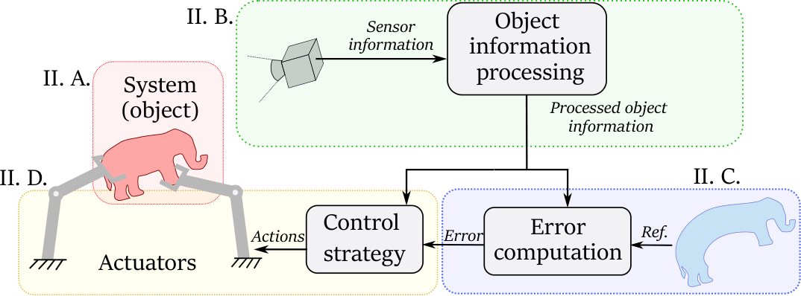
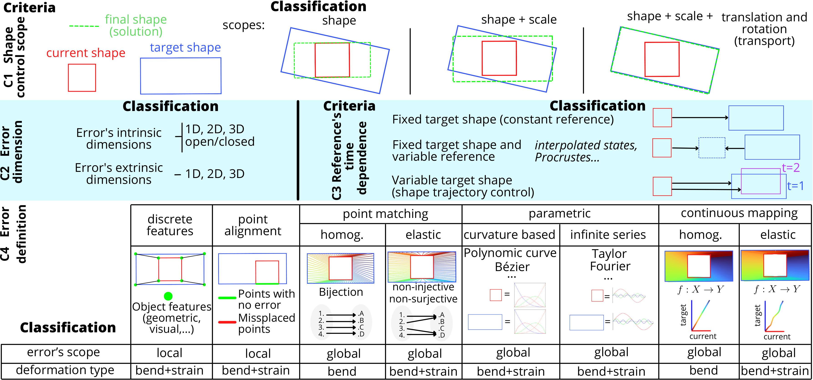
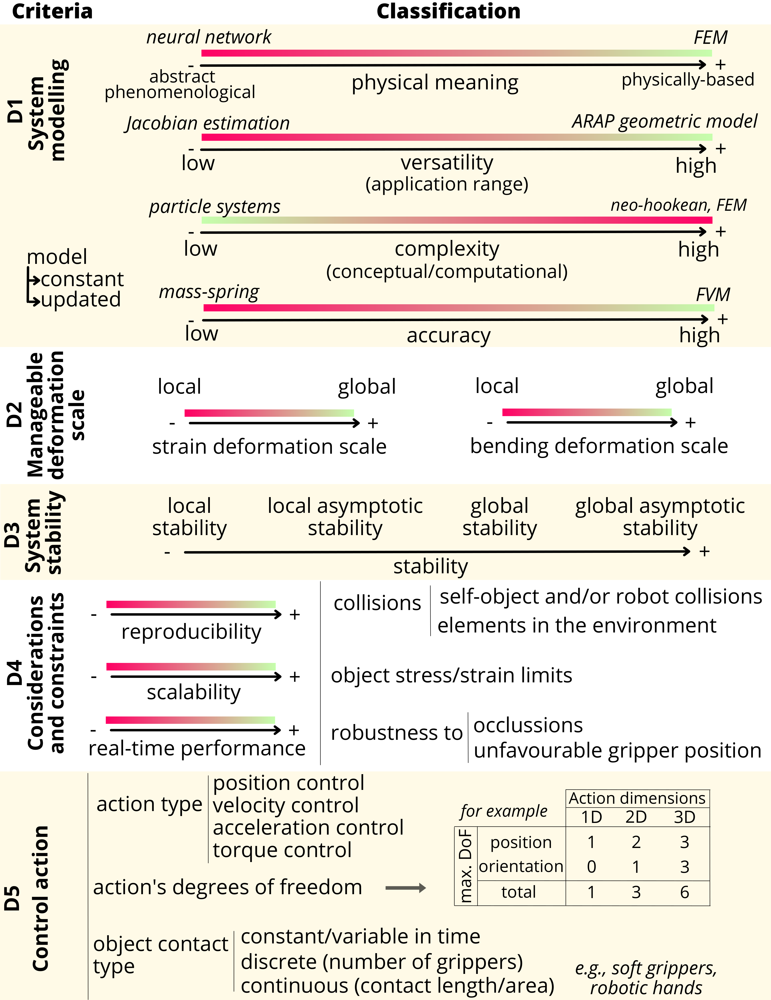

★ Taxonomy Guide: Deformable Object Shape Control
This guide provides a structured framework for the characterisation of deformable object shape control methods based on the criteria introduced in our paper:
[1] I. Cuiral-Zueco and G. López-Nicolás, "Taxonomy of Deformable Object Shape Control," in IEEE Robotics and Automation Letters, vol. 9, no. 10, pp. 9015-9022, Oct. 2024, doi: 10.1109/LRA.2024.3455770.
The criteria in our taxonomy are organised into four main groups, as illustrated in the shape control scheme below:

Select a category below to explore its criteria. Each section includes insightful questions and examples to assist you in effectively applying the criteria.
A Deformable Object: System Characteristics

A1 Object's Geometry
A1. Object's Geometry
Intrinsic Dimensions
- What are the intrinsic dimensions of the object? (1D, 2D, or 3D)
- What is the minimum number of dimensions needed to refer to different points within the object's domain?
- For example, regardless of its embedding, all points on a deformable linear object (DLO, e.g., a cable) can be referred to with a single parameter (1D), a sheet of paper requires at least two parameters (2D), and a dense foam piece necessitates three parameters to refer to all its material points (3D).
Extrinsic Dimensions
- What are the extrinsic dimensions of the object in the shape control task? (1D, 2D, or 3D)
- What are the dimensions of the space in which the object is being manipulated? Does this space match the object's intrinsic dimensionality or is it larger?
- For instance, consider a cable with 1D intrinsic dimensions. If fitted within a tube, it can be either stretched or compressed (deformation occurring along a 1D path), bent over a table (deformation occurring within a 2D plane), or twisted into a spring-like spiral shape (deformation occurring in 3D space).
Some additional practical examples of object geometry analysis:
- A spring constitutes an open 1D intrinsic, 3D extrinsic geometry.
- An inflated balloon constitutes a closed 2D intrinsic, 3D extrinsic geometry.
- A cable manipulated on a table constitutes an open 1D intrinsic, 2D extrinsic geometry.
Open or Closed Geometry
- Is the object's geometry open or closed? (specify one)
- Does the object's domain have boundaries?
- Example 1: A sheet of paper (intrinsic 2D) has a boundary (its contour constitutes a 1D intrinsic domain), and thus it constitutes an open geometry.
- Example 2: An inflated balloon (intrinsic 2D) has no boundaries, it constitutes a closed geometry.
- Example 3: A thin bike tire, which can be considered as a one-dimensional (1D) object, forms a closed loop with no boundaries.
Genus (for closed geometries)
- For 2D or 3D intrinsic closed object geometries: what is the shape's genus? (natural number quantifying number of holes)
- When discussing 2D or 3D intrinsic object geometries, regardless of the object being open or closed, the object's geometry may present several holes. The number of holes can be quantified using the mathematical term "genus" followed by a natural number.
- For example, a torus (doughnut shape) is a closed surface with genus 1. Conversely, a sphere is a closed surface with genus 0.
Scale and Convexity
- What is the scale of the object? (Provide an approximate value: 1mm, 1cm, 10cm², 1m, 10m³, etc.)
- Is the object predominantly concave or convex? (specify one)
- Scale and convexity are critical factors influencing object manipulation capabilities, including the number and ease of placement of grippers.
- Examples (scale): a grape's scale is approximately 1 cm³, thus it is hard to manipulate with conventional grippers. A tablecloth's scale is approximately 1 m², thus positioning conventional grippers is more convenient.
- Examples (convexity): an octopus is predominantly concave, whereas a cube constitutes a convex geometry. A purely convex object (like a sphere) might be hard to grasp with conventional grippers.
A2 Object's Deformation Properties
A2. Object's Deformation Properties
Deformation Capabilities
- What are the object deformation capabilities? (specify if the object can undergo: low/large strain, and/or low/large bending deformation processes)
- This refers to how the object can be deformed. The main distinctions here are strain deformation and bending deformation.
Strain Deformation:
- Can a deformation process lead to variations in the length, area, or volume of the object (locally or globally)? If so, the object can undergo strain deformation.
- Geometrical quantification: preferably quantified with relative strain percentage (%), referring to the relative change in length, area, or volume with respect to the object's rest configuration: ((length - at_rest_length)/at_rest_length) × 100.
- Guide Values:
- Low Strain Deformation: Approximately 1-5%.
- Large Strain Deformation: From 20% upwards.
- Object's opposition: provide approximate values of the Elastic Modulus (e.g., Young's modulus, [N/m²]).
- Example: a rubber band stretched horizontally to double its initial length involves a 100% stretching process.
Bending Deformation:
- Can a deformation process cause significant changes in the curvature of the object's geometry? If so, the object can undergo bending processes.
- Geometrical quantification: the change in extrinsic curvature expressed as a percentage.
- Guide Values:
- Low Bending Deformation: Relative change in curvature < 10%.
- High Bending Deformation: Relative change in curvature > 50%.
- Object's opposition: shear, bending, and torsional stiffness [N/m].
- Note: We refer to an isometric deformation when the object is purely bending, with no change in length, area, or volume.
- Example: a piece of paper that can be bent easily but is impossible to stretch without tearing it.
Examples:
- Low Strain: 5% strain on a tablecloth being stretched.
- High Strain: -30% strain on a sponge being compressed against a table.
- Low Bending: 5% relative change in curvature on a metal bar.
- High Bending: 75% relative change in curvature in a folding sheet of paper.
Response to Stress
- What is the object's response to stress? (Specify: elastic, plastic, or elasto-plastic)
- Elastic behaviour: Returns to original shape after stress is removed.
- Plastic behaviour: Permanent change in shape after stress.
- Elasto-Plastic behaviour: Initially elastic up to a threshold, then plastic.
- Quantification: Elastic Modulus (Young's Modulus) and Elastic Limit (Yield Strength).
Example guideline values:
| Material | Elastic Modulus | Elastic Limit |
|---|---|---|
| Steel | ≈ 200 GPa | ≈ 250 MPa |
| Rubber | ≈ 0.01 GPa (10 MPa) | ≈ 5 MPa |
| Polystyrene (Plastic) | ≈ 3 GPa | ≈ 70 MPa |
Inherent Structure
- What is the inherent structure of the object? (Specify: isotropic, orthotropic, or anisotropic)
- Isotropic: Uniform properties in all directions.
- Orthotropic: Different properties in orthogonal directions (e.g., wood, composites).
- Anisotropic: Varying properties in all directions (e.g., carbon fiber composites).
Material Composition
- Is the object made of a single material, multiple materials, and/or mechanically joint components?
- If several mechanically joint parts, quantify the number of parts.
- Few parts: 2 main parts, as in a book cover or a hinge.
- Many parts: 100 parts, as in a chain-mail, which behaves very much like cloth.
- In the case of multiple materials, specify the composite's name (e.g., carbon fiber).
- If several mechanically joint parts, quantify the number of parts.
A3 Object's Perception and Interaction Suitability
A3. Object's Perception and Interaction Suitability
Visual Texture
- Is the visual texture of the object rich or low?
- Poor/Low visual texture: Smooth surface, few distinctive visual features (e.g., 5 ORB features can be extracted and tracked).
- Rich/High visual texture: Surface with highly distinctive and detailed visual features (e.g., 50 ORB features could be extracted and consistently tracked).
Optical Properties
- Can the object's optical properties affect its perception? (yes/no, specify why)
- Discuss the object's reflectivity and other optical characteristics affecting sensor suitability.
- Metrics: reflectivity (percentage), translucency, color index, refractive index, etc.
- Low Reflectivity: 10%, matte surface, suitable for RGB-D cameras with infra-red projected patterns.
- High Reflectivity: 80%, glossy surface, not suitable for general-use visual or haptic sensors.
Surface Properties
- Do the object's surface properties affect the use of mechanical or tactile sensors? (yes/no, specify why)
- Metrics:
- Roughness (Ra in µm): Low (0.1 µm, very smooth) to High (10 µm, very rough).
- Friction Coefficient (dimensionless): Low (0.2, slippery) to High (0.8, very grippy).
- Metrics:
Sensor and Actuator Dependence
- What's the object's dependence on specific or specialised sensors and actuators? (low, medium or high)
- Low Dependency: Generic sensors (e.g., standard RGB-D cameras, basic tactile sensors).
- Medium Dependency: Moderately specialised sensors (e.g., infra-red sensors, ultrasonic sensors).
- High Dependency: Highly specialised sensors (e.g., medical imaging like MRI or CT scanners).
B Available Object Information Classification

B1 Information Type
B1. Information Type
From the control system's point of view, what is the available object information?
Mechanical Information
- Does the control system make use of mechanical information? (yes/no; if yes, which type: density, elasticity constants, stress, etc.)
- The control system might receive and use data about the mechanical properties or behaviour of the object. Although some of the mechanical properties may have been specified in section A, it is now important to specify which of them are actually being exploited by the control system.
Geometric Information
- Does the control system make use of geometric information? (yes/no; if yes, which type: intrinsic and extrinsic dimensions, scale, etc.)
- This requires specifying both intrinsic and extrinsic dimensions. Note that the received geometric information does not necessarily correspond directly to the actual object's geometry.
- For example: A contour extraction of a balloon observed in a 2D image provides closed 1D intrinsic, 2D extrinsic information (apparent contour), whereas the actual object (the balloon) has a closed 2D intrinsic, 3D extrinsic geometry.
B2 Information Resolution
B2. Information Resolution
Spatial Resolution
- What is the spatial resolution or density of the input information? (low, medium or high)
- Low-density: Sparse/Discrete geometric information. Example: the position of 5 visual features extracted from fiducial markers attached to the object.
- Medium-density: More detailed geometric and structured representation. Example: A 3D mesh with 50 vertices.
- High-density: Dense/continuous data points. Example: A 3D point cloud with 500 points capturing fine surface details.
- Note: Specifying the number of extracted discrete features or the pixel density (e.g., pixels per meter [ppm]) can provide a valuable measure of the information's geometric resolution.
Temporal Resolution
- What is the temporal resolution of the input information? (low, medium or high, quantify in Hz)
- Low Temporal Resolution: Sparse data captured over longer intervals. Example: Sensor data sampled at 1 Hz.
- Medium Temporal Resolution: Data captured at moderate intervals. Example: Sensor data sampled at 15 Hz.
- High Temporal Resolution: Continuous and high-frequency data capture. Example: Sensor data sampled at 120 Hz.
B3 Information Acquisition
B3. Information Acquisition
Information Source
- What is the information source? (Specify whether and how the employed information is assumed, estimated and/or measured)
- Assumed: Information based on assumptions or theoretical models. Example: assuming the elastic modulus of an object based on its material (from tables).
- Estimated: Data derived from indirect measurements or visual parameters. Example: Estimating the weight distribution of an object based on its geometry and materials.
- Measured: Directly obtained from sensors or empirical measurements. Example: Using strain gauges to measure deformation during a bending operation.
Acquisition Phase
- When and how often can you obtain such information? (a priori, offline or online)
- A Priori: Information obtained before any interaction with the object. Example: Knowing object dimensions from a CAD model.
- Offline: Acquired before the active control phase but involving direct observation. Example: Conducting a laser scan of a prototype before the control process.
- Online: Real-time information gathered during the shape control process. Example: Using computer vision to track object surface position in real-time.
- Note: The acquisition phase is critical for ensuring timely and relevant data availability. A priori and offline information helps in planning, while online information enables adaptive control strategies.
C Shape Error Definition

C1 Shape Control Scope
C1. Shape Control Scope
What does the control system care about in its shape error computation? (specify one of the 3 options)
- Shape, Scale, and Transport: Control involving shape, size, and rigid body transformations (translation and rotation).
- Shape and Scale: Control involving shape and size, but not rigid body transformations.
- Shape Only: Control involving only the shape, without considering size or rigid body transformations.
C2 Error Dimensionality
C2. Error Dimensionality
- What dimensionality does the shape error consider? (Specify intrinsic and extrinsic dimensionalities: 1D, 2D, or 3D)
- This refers to how the dimensions of the object's information correspond to the dimensions used for calculating the shape error.
- For example: you might capture detailed 3D information of a pizza using an RGB-D camera, yet only utilise the 1D intrinsic contour (the flat circular shape) to compute the control error signal. If the pizza were to deform into a cone-like shape that maintains its circular contour, the previously described error signal would fail to detect the shape change.
C3 Reference's Time Dependence
C3. Reference's Time Dependence
Does the reference shape information vary through time? How does it vary? (specify one)
- Fixed Target Shape (Constant Reference): The control reference remains constant, sometimes facilitating stability analysis as the derivative of the shape reference is zero.
- Fixed Target Shape with Variable Reference: While the target shape remains fixed, new intermediate control references are computed between the target shape and the current shape (e.g., interpolating intermediate states or Procrustes analysis), facilitating shape control convergence.
- Variable Target Shape (Shape Trajectory Control): The reference shape itself varies over time, presenting a challenge in maintaining proper shape control over the target shape evolution.
C4 Error Definition Types
C4. Error Definition Types
What method does the shape control system use to compare the current and target shape representations? (specify one)
Discrete Feature-Based Errors
- Compares sparse visual or geometric features between the current and target shapes, such as specific keypoints or distinctive visual elements.
- Example: Detecting, matching, and comparing the position of ORB features between two different object configurations.
- Note: this method relies on the presence and consistent placement of visual features in the target shape.
Point Alignment Errors
- Focuses on aligning specific points on the object to points on the target shape, without directly computing point correspondences.
- Example: Aligning pixels from a homogeneously textured object, aiming to maximise the overlap between the current and target pixel positions.
Shape Point Matching
- Matches sets of points sampled from the shape's geometric domains:
- Homogeneous Matching: Points are uniformly distributed across current and target shapes. Effective for isometric deformations. Example: Sampling 10 evenly spaced points along the medial axis of a DLO.
- Elastic Matching: Point matches are variably distributed to represent material points during strain deformations. Example: Sampling points uniformly along cloth contours during stretching, then matching with non-uniform density.
Parametric Errors
- Based on comparing mathematical parameters that define curves (e.g., Bézier curves) or series (e.g., Fourier series), quantifying differences based on mathematical representations.
- Example: comparing the value of the complex Fourier coefficients between two closed contours.
Continuous Map Errors
- Compares continuous representations of shape domains. The most complete ways of comparing two shapes:
- Homogeneous Continuous Maps: Points are uniformly distributed in the mapped space, such as in functional maps for surfaces.
- Elastic Continuous Maps: Points are variably distributed, adapting to deformations like stretching or compressing, such as in FMM continuous contour mapping.
D Control Strategy Characterisation

D1 System Modelling
D1. System Modelling
Physical Meaning Scale
- Is your model physically meaningful or abstract? (use the 1–8 scale below)
Physically Meaningful (1–3):
- 1: Fully constitutive model with detailed physical accuracy (e.g., FEM, detailed thermodynamic models).
- 2: Mostly constitutive with some abstract elements (e.g., simplified FEM with empirical adjustments).
- 3: Balanced between constitutive and abstract (e.g., reduced-order models with significant physical basis).
Mixed (4–5):
- 4: Predominantly abstract but includes key physical parameters.
- 5: Equally abstract and physical (e.g., mixed methods combining physical laws and statistical approaches).
Abstract (6–8):
- 6: Mostly abstract with minimal physical parameters.
- 7: Highly abstract with some physical parameters used for calibration.
- 8: Fully abstract control-oriented model (e.g., neural networks, pure statistical models).
Additional Characterisation
- Versatility: Can the model apply to various scenarios or is it specific to certain objects or materials?
- Complexity: Specify algorithmic complexity (Big O notation) and time-cost in [Hz] if possible.
- Accuracy: Specify the model's accuracy as the MSE between predicted and observed behaviour.
D2 Manageable Deformation Scale
D2. Manageable Deformation Scale
The ability of an object to undergo large deformations does not necessarily mean that a control system can handle such deformations effectively.
- What types of deformations can the shape control system handle?
- Strain Deformations: Handling changes in length or stretching.
- Bending Deformations: Handling changes in shape such as folding or curving.
- Note: some shape control systems may excel at isometric deformations but fail to converge when strain deformations occur.
- Can the control system handle large deformations? What are the limitations?
- Local Deformations: Ability to handle small-scale changes (< 5%).
- Global Deformations: Ability to handle both small and large-scale bending or stretching (> 50% in bending and > 20% in strain).
D3 System Stability
D3. System Stability
- Does the shape control approach provide formal stability analysis? (yes/no; if yes, what type: local stability, local asymptotic stability, global asymptotic stability, etc.)
- Does the approach provide controllability/reachability analysis? (yes/no; if yes, specify the domain: full-state, local, in a set or sub-set?)
- Impact of number and placement of actuators on stability, controllability, and/or reachability: (high, moderate, or low)
- High impact: Requires high number of actuators (>10 grippers) optimally located.
- Moderate impact: Requires sufficient actuators (5–10 grippers) in strategic locations.
- Low impact: Achievable with few actuators (1–4 grippers) or inconvenient placement.
- Is reachability considered in the definition of target shapes?
- Highly considered: Explicit definitions of target shapes from reachable region analysis.
- Moderately considered: Some discussion of how target shapes consider reachability.
- Non-specified: No explicit specifications.
- Note: Researchers often use robots to obtain shapes with specific gripper placements, then use these as target shapes.
D4 Considerations and Constraints
D4. Considerations and Constraints
Reproducibility (1–5 scale)
Implementation Complexity:
- 1: Very easy, no special requirements (e.g., PID controller).
- 2: Simple, minimal expertise (e.g., Jacobian-based controller).
- 3: Requires some expertise (e.g., Model Predictive Control).
- 4: Complex, advanced knowledge (e.g., Reinforcement Learning).
- 5: Highly complex, deep expertise (e.g., Koopman-based non-linear control).
Transferability:
- 1: Easily transferable, no modifications.
- 2: Mostly transferable, minor adjustments.
- 3: Requires parameter tuning.
- 4: Hard to transfer, significant modifications.
- 5: Very difficult, extensive changes required.
Resource Requirements:
- 1: Minimal (<10 MB, basic laptop).
- 2: Low to moderate (10–100 MB, standard desktop).
- 3: Moderate (100 MB–1 GB, moderate computational power).
- 4: High (>1 GB, high computational power).
- 5: Extremely high (specialized hardware, large-scale computing).
Training and Setup Time:
- 1: Very short (<1 hour).
- 2: Short (1–4 hours).
- 3: Moderate (4–12 hours).
- 4: Long (12–24 hours).
- 5: Very long (>24 hours, extensive training).
Examples:
- Jacobian-based online updated strategy: implementation=2, transferability=1, resources=2, setup time=1.
- Deep reinforcement learning controller: implementation=4, transferability=4, resources=4, setup time=5.
Scalability (1–5)
- 1: Maintains high accuracy and fast convergence across wide range.
- 2: Generally consistent with minor variations.
- 3: Moderate consistency, noticeable changes.
- 4: Significant variation with object size or actuator numbers.
- 5: Poor scalability, drastic performance changes.
Additional Constraints
- Real-time performance: Specify the controller's processing time [ms] or frequency [Hz].
- Practical constraints: Does the method incorporate collision avoidance, object strain limits, and other feasibility considerations? Clearly specify.
D5 Control Actions
D5. Control Actions
Action Type
- Describe the types of control outputs: end-effector position control, velocity control, or other types.
- For example, while position-based control is common, it may not be suitable for tasks involving highly inertial deformations (e.g., cloth hanging from a gripper). Force-based actions are suitable for considering stress limits in delicate objects.
Dimensions and Degrees of Freedom (DoF)
- Specify the dimensions (1D, 2D or 3D) and number of DoF involved in the control actions.
- Note: In the existing literature, shape control usually takes place in 2D planes (2D translation + 1D rotation = 3 DoF). The extension to 6 DoF introduces complexities due to multiple solutions and singularities.
Object Contact Type
- Clearly specify the type of actuator-object contact: how does it actually occur in reality, and how is it taken into account in the control system?
- Examples: A common assumption is to consider gripper-object contact as a single point, although alternative approaches consider larger contact areas. Some methods incorporate contact points with the environment (tables, obstacles) as collaborative actuation elements. It is essential to explicitly describe how contact information is processed by the control system.
★ Usage Note
When seeking precise characterisation of a method, we recommend using formal mathematical notation and International System of Units (SI) quantifications. For instance: strain in percentage (% change of m), bending in curvature change (% change of m⁻¹), spatial resolution in pixels per meter [ppm], computational time cost in milliseconds [ms], or complexity using big O notation.
However, not all criteria will always need quantification; qualitative descriptions are also valuable. For example, the use of Local Binary Patterns to quantify the visual texture of the object may be excessive if one simply indicates sufficient visual texture for robust ORB feature extraction.